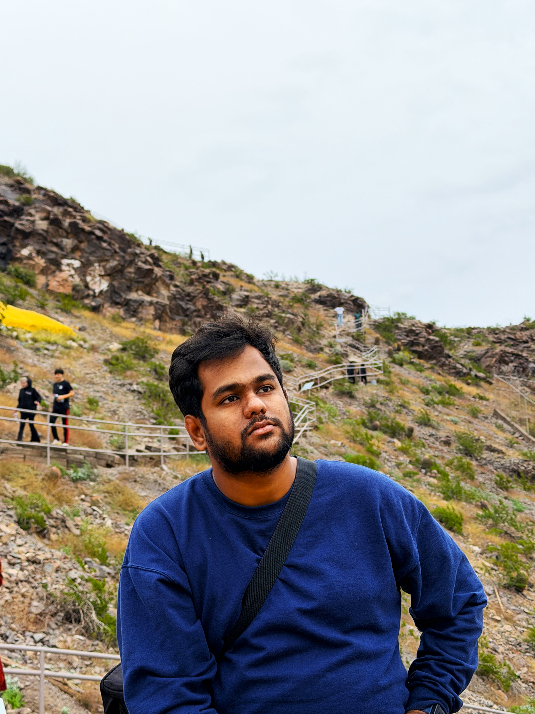

About Me
I am an engineering graduate student focused on robotics, autonomous systems, simulation, hardware integration, and security-aware system design.
I have completed my MS in Robotics and Autonomous Systems at Arizona State University, in May 2026. My strongest technical focus is robotics: ROS2, SLAM, Nav2, control systems, multi-sensor fusion, dexterous manipulation, machine learning for robotics, and the transition from simulation to physical deployment.
At Prof. Zhe Xu's Robotics Lab at ASU, I work on the TetherIA Aero Hand, a 7-DOF tendon-driven robotic hand integrated with a Stretch3 mobile manipulator. My work includes Python-based ROS2 control architectures, joint-space trajectory planning, hardware communication, and validation across dexterous manipulation tasks such as dice rolling, bottle grasping, card picking, and teleoperation-based manipulation.
My academic and independent projects span autonomous warehouse patrolling, swarm robotics, solar irrigation control, rocket engine anomaly detection, embedded AGV development, and thermal simulation. I enjoy work that connects models, simulation, control logic, sensors, and hardware behavior into systems that can be tested and improved.
Alongside robotics, I also bring a cybersecurity and GRC background from my internship at CyRAACS, where I supported ISO 27001-aligned governance activities, security audits, risk assessment, phishing monitoring, Microsoft Defender 365, KDMARC, SAFEScore.ai, and Infosec IQ workflows. I see this as a useful secondary strength, especially as autonomous systems, robotics platforms, and industrial automation become more connected and security-sensitive.
My portfolio is mainly centered on robotics and autonomous systems, with cybersecurity as a complementary layer. I am interested in full-time roles across robotics engineering, autonomous systems, controls, automation, systems engineering, robotics software, and selected GRC/security roles.
I am STEM OPT eligible and open to opportunities in the United States, India, and remote/hybrid engineering teams.
Email: yashgangatkar@gmail.com
LinkedIn: linkedin.com/in/nmyashwanthgowda
GitHub: github.com/yashwanthgowdanm

Community & Volunteering
-
Social Impact Volunteer Cognition — Social Innovation & Research Centre, Bengaluru
May 2021 – May 2022 -
Event Coordinator / Backstage — BIT Festivals Kannada Kalarava (2018, 2020, 2021) & Manthan (2019)